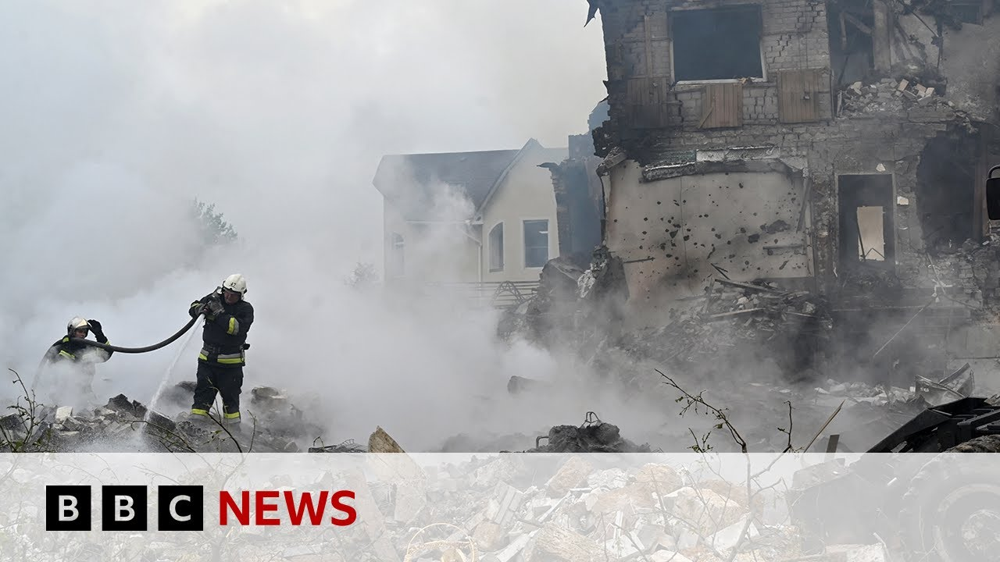

【俄罗斯对乌克兰发动迄今最大规模空袭 | BBC新闻】
Summary: Russia has intensified strikes on Ukraine with a record number of drones and missiles launched in a single night, triggering nationwide air alerts and forcing civilians into shelters. Meanwhile, the largest prisoner exchange between the two nations has been completed.
摘要： 俄罗斯以单晚最高数量的无人机和导弹加强了对乌克兰的袭击，引发全国空袭警报并迫使平民躲入避难所。与此同时，两国间最大规模的战俘交换已完成。

⏱️ Estimated Reading Time: 3 min
Russia has intensified its strikes on Ukraine with the highest number of drones and missiles launched in a single night yet.
俄罗斯以单晚最高数量的无人机和导弹加强了对乌克兰的袭击。
At one point, the whole of Ukraine was under an air alert as missiles were fired from the Black Sea and strategic bombers in Russia.
乌克兰全境一度处于空袭警报下，导弹从黑海和俄罗斯的战略轰炸机发射。
Officials in the Ukrainian capital said around a dozen enemy drones had reached Kiev's airspace, which forced thousands to take shelter in metro stations and basement.
乌克兰首都官员表示，约12架敌方无人机进入基辅领空，迫使数千人躲进地铁站和地下室。
It comes as the biggest prisoner of war exchange so far between Russia and Ukraine is now complete.
与此同时，俄乌之间迄今最大规模的战俘交换现已完成。
These are the latest pictures we've received from Ukraine's capital.
这是我们收到的来自乌克兰首都的最新画面。
12 people are reported to have been killed in Kiev.
据报道，基辅有12人丧生。
The Ukrainian president Vladimir Zelensky warned that America's silence and the silence of others in the world only encourages Vladimir Putin.
乌克兰总统弗拉基米尔·泽连斯基警告称，美国及世界其他国家的沉默只会助长弗拉基米尔·普京的气焰。
Our correspondent in Kiev, James Waterhouse, says the impact of the overnight strikes are far-reaching.
本台驻基辅记者詹姆斯·沃特豪斯表示，夜间空袭的影响深远。
This was a night where, according to Ukraine's air force, you've got more than 360 missiles and drones.
据乌克兰空军称，当晚发射了超过360枚导弹和无人机。
That is the highest number yet since Russia started launching these huge air assaults uh in late 2022.
这是自2022年底俄罗斯开始发动大规模空袭以来的最高数字。
In the time since Moscow has been able to manufacture uh these drones at a far a much faster rate, there's also an arms race when it comes to drones between Ukraine and Russia.
在此期间，莫斯科能以更快速度制造无人机，乌俄之间也展开了一场无人机军备竞赛。
Both are being fitted with more sophisticated technology uh and packed with more explosives.
双方无人机都配备了更先进的技术并装载更多炸药。
And I think that is now translating into, you know, in the case of this weekend for cities like Kiev, 48 hours of pretty sustained bombardment.
我认为这导致基辅等城市在本周末遭受了持续48小时的猛烈轰炸。
I mean, last night the sirens went at midnight and there were explosions right all the way through until sunrise.
昨晚午夜警报响起，爆炸一直持续到日出。
I mean, the skies were lit up with search lights and you could hear air defenses going off.
天空被探照灯照亮，防空火力声不绝于耳。
You could see the occasional drone intercepted.
偶尔能看到被拦截的无人机。
You could hear their uh motors and several regions in central, northern, southern Ukraine were targeted in this way.
能听到它们的引擎声，乌克兰中部、北部和南部多个地区均遭此类袭击。
Uh and that is why President Zelensky is again urging his allies to put more pressure on Russia to not just uh stop fighting, stop these aerial assaults, but also to engage in a ceasefire.
正因如此，泽连斯基总统再次敦促盟友向俄罗斯施压，不仅要停止战斗和空袭，还要达成停火协议。
But at the moment uh his calls are falling on deaf ears.
但目前他的呼吁无人响应。
James Waterhouse.
詹姆斯·沃特豪斯。